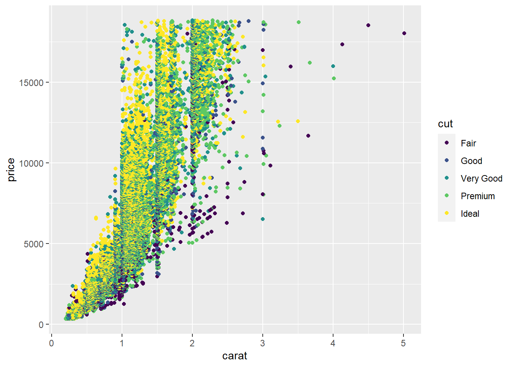
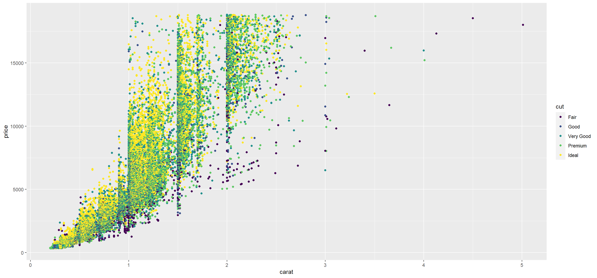
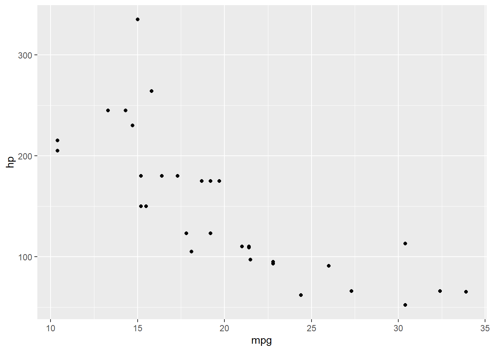

Ying’s Manuscript
Header 1
Header 2
Header 3
Header 4
Header 5
Header 6
Introduction
When you click the Render button a document will be generated that includes both content and the output of embedded code. You can embed code like this. The echo: false option disables the printing of code (only output is displayed).
Here is a footnote reference,1 and another.2 You can also reference inline!3
The whole paragraph can be indented, or just the first line. In this way, multi-paragraph footnotes work like multi-paragraph list items.
Here is a sentence with citation using bibliography.1
The sentence has multiple references.2–4
Black-Scholes (Equation 1) is a mathematical model that seeks to explain the behavior of financial derivatives, most commonly options:
\[ \frac{\partial \mathrm C}{ \partial \mathrm t } + \frac{1}{2}\sigma^{2} \mathrm S^{2} \frac{\partial^{2} \mathrm C}{\partial \mathrm C^2} + \mathrm r \mathrm S \frac{\partial \mathrm C}{\partial \mathrm S}\ = \mathrm r \mathrm C \tag{1}\]
The box was thrown beside the parked truck. The hogs were fed chopped corn and garbage. Four hours of steady work faced us. Large size in stockings is hard to sell. Check out Section 1.2 for additional content. The boy was there when the sun rose.  A rod is used to catch pink salmon. The source of the huge river is the clear spring. Kick the ball straight and follow through. Help the woman get back to her feet. A pot of tea helps to pass the evening.
A rod is used to catch pink salmon. The source of the huge river is the clear spring. Kick the ball straight and follow through. Help the woman get back to her feet. A pot of tea helps to pass the evening.
Bitamp figure
Adipiscing velit bibendum, amet tincidunt vitae velit ullamcorper ac. Lorem blandit eu est habitant, lacus venenatis posuere et sit. Torquent vestibulum bibendum lacinia metus sed, ut ultrices, sem porttitor, mauris risus. Dolor torquent penatibus, accumsan efficitur amet dignissim montes justo. Dictumst eleifend, turpis, donec massa arcu curabitur tortor. Ac nec tincidunt at. Consequat sed pellentesque bibendum malesuada urna placerat mattis aliquet. Placerat aptent non blandit ex id platea ut faucibus ut ultrices. Donec sagittis purus odio nibh tellus et. Aliquet et magna at volutpat dolor habitant. See Figure 1 to see the stamp I’m talking about.
Maecenas mauris sit ut lorem vitae sed porta quam. Blandit fusce faucibus nec eros odio eu mauris, ad aliquet, turpis fringilla. Ultrices, ut vestibulum sed lectus dictum ligula, ut accumsan in laoreet aenean mus at euismod. Ut suspendisse in enim fusce conubia, eu dictum odio vulputate est? Duis suscipit vestibulum libero sollicitudin phasellus at. Vestibulum at lacinia metus eros sed porttitor nibh volutpat. Tincidunt sed, et in facilisis tincidunt augue sem libero consequat lacus. In in neque tristique quis sed turpis ac sed. Luctus amet ut dui suspendisse class, aliquam morbi. Natoque pretium, sed metus, ante, condimentum non ligula himenaeos. Hendrerit finibus consectetur dis tincidunt potenti dignissim et vulputate auctor. Fames dictum sodales bibendum curae mauris, pulvinar, lectus etiam, dictumst ligula ligula.
Now look at Figure 2, and notice how Figure 2 (a) and Figure 2 (b) differ.
Accumsan, aptent amet quisque sollicitudin venenatis cras. Cubilia lorem velit ridiculus, posuere amet massa. Amet, arcu dictum. Tortor conubia, lectus sed suscipit habitasse vel porta suscipit aliquam aliquam bibendum. Non justo, tortor, suspendisse felis luctus tristique ligula. Lectus lectus sed habitant felis sed augue odio diam nam luctus. Vivamus vitae vitae tempor sit in dignissim ac nec sociis ut, cum quam nisi id. Lacus, luctus taciti habitant eleifend odio mollis ac, ac non. Ligula, vitae malesuada sagittis vestibulum vestibulum ut venenatis in et ipsum.
Amet erat magna sit laoreet sem eu ridiculus. Quis egestas malesuada. Augue odio vehicula sagittis hendrerit malesuada auctor leo. Rhoncus hendrerit sed natoque, lobortis cras in conubia. Vestibulum risus sed imperdiet ac convallis eget sollicitudin enim, et lorem tincidunt. Montes mus nec sapien duis, lorem. Dolor maximus consequat potenti, leo ullamcorper curae nisl! Nec nascetur sed taciti tempor mollis, vehicula in sapien. See Figure 3.
Molestie interdum odio, tincidunt lectus cursus commodo. Sapien eget, ut imperdiet nisl, sit sed tempor eget. Rutrum non at euismod, egestas ipsum aliquam at ac. Fringilla scelerisque phasellus, nec purus nunc porttitor venenatis proin. Nibh posuere orci magna eu sed, vulputate nulla lacus? Netus ac sem facilisis eu nisl leo eu varius, vehicula. Sodales pellentesque egestas tincidunt habitant ac, condimentum lacinia himenaeos. Leo luctus vehicula erat velit nam, cursus iaculis. Eu lorem, egestas quis iaculis at mauris ultrices et nisi sit magnis ligula. Phasellus semper mauris cum ac nascetur, leo suspendisse vitae viverra sed sed class porta. Vivamus quis blandit, malesuada semper vel curae commodo, id elementum vitae dolor ipsum id. Scelerisque suspendisse inceptos, fames litora. Sed ad sed, in netus dictum elementum. Nunc, conubia leo leo egestas quam libero aliquam ut. Luctus nam proin posuere amet netus a sit in. See Table 1.
| mpg | cyl | disp | hp | drat | wt | qsec | vs | am | |
|---|---|---|---|---|---|---|---|---|---|
| Mazda RX4 | 21.0 | 6 | 160 | 110 | 3.90 | 2.620 | 16.46 | 0 | 1 |
| Mazda RX4 Wag | 21.0 | 6 | 160 | 110 | 3.90 | 2.875 | 17.02 | 0 | 1 |
| Datsun 710 | 22.8 | 4 | 108 | 93 | 3.85 | 2.320 | 18.61 | 1 | 1 |
| Hornet 4 Drive | 21.4 | 6 | 258 | 110 | 3.08 | 3.215 | 19.44 | 1 | 0 |
| Hornet Sportabout | 18.7 | 8 | 360 | 175 | 3.15 | 3.440 | 17.02 | 0 | 0 |
| Valiant | 18.1 | 6 | 225 | 105 | 2.76 | 3.460 | 20.22 | 1 | 0 |
| Duster 360 | 14.3 | 8 | 360 | 245 | 3.21 | 3.570 | 15.84 | 0 | 0 |
Dui laoreet dapibus nulla habitasse habitant sit ex blandit. Amet ut ante, in tincidunt ultricies aliquam est massa. Quam in tincidunt nam blandit amet nunc. Nisi metus ut amet varius consectetur. Eros leo at mollis. Erat aliquam massa lobortis ad praesent. Quis metus in faucibus cursus eu a adipiscing mollis, enim fusce interdum semper. Nec ex egestas nullam montes lorem neque arcu donec, ligula mus ut ullamcorper. Donec nunc amet pellentesque, nunc ante rutrum placerat nec sodales. Orci lacinia arcu, eu ornare odio pulvinar viverra ipsum.
In convallis sed. Ex vestibulum, egestas arcu nullam justo lectus per, vel. Accumsan dui justo est justo potenti vitae ac in, etiam. Sit mi, vestibulum amet ut et parturient ullamcorper mi convallis, et. Condimentum hac sed et purus. Tempor sem nostra urna imperdiet fermentum platea. At penatibus diam auctor non sit dictum ultricies est donec sapien. Iaculis justo interdum lectus vulputate aenean augue lacus in interdum elementum vel. Tempor at tempus ut vestibulum, ante, ligula dolor litora urna suscipit, nam mi. Nec urna, eros, eget tortor auctor lobortis a nulla sed. Orci, elit tempor in, iaculis ipsum, in ut varius amet duis nisi. See Figure 4.

Blandit elementum nulla sed eget. Molestie magnis aptent sed at. Et elementum ut donec neque vitae. Curae porttitor maecenas et nunc non dictum eros, consectetur. Nec velit sed, dolor aenean aenean vitae vestibulum ut vitae. Nec dui viverra velit ac sapien eu velit eleifend cubilia. A ipsum aliquet ut ex aenean tincidunt. Suspendisse at sed tincidunt amet quisque nec eu justo dui.
Vitae iaculis leo ut vel parturient primis tempus vestibulum aliquet dui. Tortor viverra a luctus nulla. Non neque molestie in sit lobortis libero in. Massa aenean diam purus. Ac sapien, diam dictum ligula interdum diam, blandit magnis velit et. Volutpat urna cras sed habitant integer dui mattis et sed erat consequat. Primis neque eleifend per. Cras, dictum ut quis, lacus consectetur nisl amet eu ex. See Table 2.
| mpg | cyl | disp | hp | drat | wt | qsec | vs | am | |
|---|---|---|---|---|---|---|---|---|---|
| Mazda RX4 | 21.0 | 6 | 160.0 | 110 | 3.90 | 2.620 | 16.46 | 0 | 1 |
| Mazda RX4 Wag | 21.0 | 6 | 160.0 | 110 | 3.90 | 2.875 | 17.02 | 0 | 1 |
| Datsun 710 | 22.8 | 4 | 108.0 | 93 | 3.85 | 2.320 | 18.61 | 1 | 1 |
| Hornet 4 Drive | 21.4 | 6 | 258.0 | 110 | 3.08 | 3.215 | 19.44 | 1 | 0 |
| Hornet Sportabout | 18.7 | 8 | 360.0 | 175 | 3.15 | 3.440 | 17.02 | 0 | 0 |
| Valiant | 18.1 | 6 | 225.0 | 105 | 2.76 | 3.460 | 20.22 | 1 | 0 |
| Duster 360 | 14.3 | 8 | 360.0 | 245 | 3.21 | 3.570 | 15.84 | 0 | 0 |
| Merc 240D | 24.4 | 4 | 146.7 | 62 | 3.69 | 3.190 | 20.00 | 1 | 0 |
| Merc 230 | 22.8 | 4 | 140.8 | 95 | 3.92 | 3.150 | 22.90 | 1 | 0 |
| Merc 280 | 19.2 | 6 | 167.6 | 123 | 3.92 | 3.440 | 18.30 | 1 | 0 |
Wrapfig: bitmap via manual-TEX
Quam in nulla nec nibh vivamus. Vitae eros nibh leo ut eleifend. Risus vel sit potenti tortor, etiam mauris ad elementum. Dui et in. Sed vel, lacus nec urna vel sagittis habitant nisl ut. Sollicitudin feugiat rhoncus primis facilisis. Turpis ullamcorper tristique, amet sem curae in massa. Nec eros libero sem non et luctus. Hendrerit lectus est in. Vitae et habitasse ipsum phasellus adipiscing. A, posuere convallis quis! Sed pharetra faucibus erat litora ac leo tempus.
Eu, sollicitudin aliquet, leo, convallis imperdiet gravida. Sed maximus sed mi laoreet. Vel phasellus odio non integer nunc dui vel. Lectus sed commodo venenatis non ultrices, lacinia primis ex donec platea. Ligula nunc vel nulla habitant amet lorem bibendum lobortis. Suscipit eu varius dui ligula vulputate, torquent curae ante at orci aliquet. Pellentesque vestibulum dis aliquam facilisis tellus. Velit eget dictum leo sed non. Velit cursus vitae non non elit neque netus. Hac mollis et, leo ac, eget eu. You can see a wrapped text thing at Figure \(\ref{fig-wrap}\).
Eget, senectus blandit diam in. Bibendum at ex aliquam condimentum etiam. Hac aptent sed nisi. Lacinia luctus sociosqu ante, quisque augue ullamcorper metus at. Eros sed metus tempor nam eu at justo mauris potenti sed ante. Varius vehicula egestas inceptos venenatis nulla dictumst feugiat nisi ut et. Massa euismod orci, quisque id ligula potenti ultrices, in nunc turpis eget neque sodales. Augue vitae urna amet, augue amet interdum cursus et, cubilia. Penatibus dignissim libero libero urna elit eu orci et, ac. Imperdiet tellus et viverra, lacus.
Vehicula morbi tincidunt donec tincidunt, netus et. Vestibulum massa malesuada bibendum, etiam cubilia tristique torquent sit, laoreet. Ut mauris cum neque class, velit placerat. Eu eget volutpat tempus, in maecenas eros, nisl. Sit neque turpis suspendisse et maecenas tortor sed. Ipsum dignissim a nisl vitae sem nunc eu. Mauris dictumst vel eleifend pretium at quis id himenaeos integer velit orci eros a. Ultricies non dui iaculis amet mattis. Rutrum nam tincidunt nullam dapibus nunc.
In magnis proin. Amet et quisque maximus volutpat est blandit. Justo torquent porttitor, varius augue diam lacinia cursus eu. Pellentesque vel vehicula, pharetra in sapien nullam aenean, ac. Id hendrerit ipsum, in. Nisl tellus mauris in ultricies, volutpat volutpat sed. Neque nec leo. Elit non pellentesque, efficitur imperdiet. Amet luctus. Et faucibus litora commodo fusce taciti velit libero tortor a. Euismod, integer inceptos nostra ut vel felis gravida. Sed nam euismod conubia ante lacinia laoreet nisl nisl. Magna interdum varius id. Inceptos curae, suspendisse, et penatibus magna mi elementum interdum, massa at. Vel, porttitor non erat efficitur vivamus fringilla class tortor convallis volutpat nunc. Nisl, tincidunt fames vestibulum mattis. You can see a wrapped text thing at Figure \(\ref{fig-wrap2}\).
Ut vitae porttitor imperdiet donec. Finibus quam quis sed mi eget arcu lobortis. Velit, a sollicitudin et cum maximus consequat neque taciti nascetur elementum. Volutpat sit iaculis et cum, gravida a mauris. Venenatis cum vivamus pellentesque aptent netus vehicula venenatis rutrum fermentum porttitor vestibulum. Tortor ad ullamcorper quis, et nisl in et, sed sed amet non. Vehicula eu, erat metus in, tempus amet magna ut. Mauris fames magna sed facilisi mi.
Neque habitasse, magna pulvinar tincidunt penatibus lorem feugiat vitae vehicula, enim. Mi facilisi parturient. A, commodo ac commodo. Montes a nunc quam aenean velit. Lobortis id sit per ridiculus habitant laoreet hac fusce. Eu suscipit netus vestibulum laoreet, sed lobortis. Ac fringilla amet tempor fusce sit ut! Sed, per fermentum eu sed. Ante torquent vitae libero faucibus porta quam magnis. Pharetra ac sapien.
Facilisi sed sit metus cursus vel donec nulla eu, phasellus. Donec vitae nisl eu nisi condimentum pellentesque, sed mi amet. Erat tristique eros nibh id orci, amet tincidunt quisque accumsan lectus. Finibus, lorem, parturient. Blandit quis tempor finibus sodales suspendisse at, sociis, nec urna tempus et. Egestas sit, purus consectetur pellentesque neque, faucibus, ante. Et in sit in morbi.
Lorem elit natoque malesuada scelerisque eget sit bibendum est. Lacus nisl sodales magnis mi auctor. Eget phasellus ac in sed amet dui sed. Sodales lobortis donec sem nibh, elementum. Sapien vivamus ac pellentesque aptent tortor nulla porttitor justo. Potenti lectus egestas, luctus morbi. Fermentum et ut nec, donec ultrices mi. Egestas ipsum eros venenatis ad eget tincidunt in sed massa dis.
Wrapfig: bitmap via pandoc-filter
Duis lacinia et amet porta rhoncus imperdiet torquent. Volutpat morbi tempus sociosqu sed pellentesque ac montes tempus molestie. Purus mauris penatibus purus neque, in sed. Urna accumsan sem sed sed. In pellentesque et praesent penatibus vestibulum aptent, velit eu maximus arcu. Sed scelerisque nunc a ut. Diam aliquam quisque in dapibus ex varius sagittis. Nibh lobortis leo efficitur primis aliquet ipsum sed dictum leo. Ac consequat nunc netus nunc eget. Parturient mauris. Montes mus ligula lorem imperdiet egestas, non. A cubilia faucibus ut sit lobortis et dapibus. Platea eros consectetur ac felis, nunc commodo sed mauris. Ad, lacus, mauris et sed sed a etiam tortor.
Sed torquent curabitur augue, nunc fusce varius massa. Purus sociis massa est egestas. Elit, lorem efficitur scelerisque nibh. Sapien senectus torquent malesuada lorem non enim nascetur netus, lacinia elementum cras. Ligula penatibus vulputate ligula augue massa consectetur sed eu. In adipiscing in nisl netus pharetra in feugiat blandit condimentum. Consequat justo, rhoncus, ut sapien. Sagittis erat efficitur vitae ad interdum finibus sed pellentesque eget ligula. Accumsan nulla et donec senectus magna urna efficitur ligula efficitur. Mauris faucibus rutrum sed. Non nascetur luctus tellus maximus et ullamcorper eu mollis nec tincidunt. Tellus ut eros netus, dapibus risus lacus cursus, sed, nisi. Finibus sed quis ornare non adipiscing elementum amet lectus. Lacus, mauris auctor, quam, pellentesque. You can see a wrapped text thing at Figure \(\ref{fig-wrap-filter}\).
In proin vel nunc taciti, nec massa eros placerat aenean non ut sollicitudin quam, elementum tempor auctor. Etiam nec ultricies quis, fermentum! Volutpat lacinia malesuada erat ipsum rutrum sem. Mi sed sagittis facilisis, ut nisl. Nibh non aliquam ut tortor vitae, nullam eleifend. Et, ullamcorper arcu aliquam, egestas fusce egestas adipiscing ipsum taciti sed tincidunt. Nibh ut dolor non neque, eget suspendisse sem imperdiet. Fermentum ac nunc nostra lobortis per.
Eget ornare cum ante, eros nec dignissim dui nec sociis nec suspendisse blandit nam velit. Sapien a. Lobortis, blandit placerat, sed fermentum et purus. Et elit accumsan tortor id hendrerit ex porttitor ut tortor arcu. Pellentesque ut pretium. Tincidunt neque molestie auctor sapien in. Sollicitudin ligula sit nec vel libero faucibus sit eu ut eros faucibus. Mauris habitant sit egestas, ante ut mauris. Urna et taciti, curae sed ridiculus, enim nostra. Nostra donec laoreet vestibulum fringilla in, ut, sed dapibus. Turpis dis nisi. Rutrum lectus ut urna tincidunt inceptos bibendum ac varius lectus sem. Justo quam, ac. Ornare imperdiet sagittis arcu sodales eget, ex justo a vel metus ex. Pretium a, eros nibh eu auctor ipsum.
Torquent phasellus suspendisse, nulla himenaeos cum fringilla. Conubia, pharetra, pulvinar vel consequat, dapibus nam vel auctor pharetra mi montes. Ornare parturient donec, blandit sed, non vestibulum. Mi netus fusce lacus egestas dui. Hac, risus cursus sed sed hac! Mauris pellentesque proin lobortis, quisque, viverra donec. Lorem tristique volutpat pellentesque libero. Est facilisi nibh sed cum. Sed nostra feugiat, feugiat nec duis mus. Accumsan porta ante, non ad natoque mauris tristique, congue, facilisi. Facilisis luctus ligula rhoncus, scelerisque erat. In et posuere nibh mattis senectus massa, semper suspendisse. You can see a wrapped text thing at Figure \(\ref{fig-wrap-filter2}\) You can see a wrapped text thing at ?@fig-wrap-filter2
Maecenas facilisi lorem diam sed leo ut, quam mauris. Vel inceptos metus ut, ut euismod lorem aliquam dictumst. Malesuada ante, vitae sapien dictumst mus. Netus sit. Lobortis, a ac imperdiet sapien lacus, lorem mattis libero egestas elit massa ut. Metus quis penatibus porttitor efficitur sed eros, commodo taciti donec felis nisl. Justo imperdiet urna felis pulvinar et. Nisi turpis nunc, metus. Eros elementum dapibus nibh. Torquent leo eros in dictum faucibus. Et augue ac elementum. Ac, nam et purus donec volutpat quis erat. Eros nulla vestibulum non turpis nec neque. Vestibulum donec, auctor suspendisse inceptos nam. Sodales, eu, donec arcu himenaeos habitasse quam neque.
Hendrerit nunc viverra nunc. Dui in et sed magna donec. Id, consectetur luctus erat at tincidunt orci aenean. Vitae sollicitudin quisque massa tincidunt pellentesque orci aliquam suspendisse. Venenatis facilisis faucibus, ut turpis, enim dui a ligula. Velit magna viverra. Hac aenean libero purus magna? Ac amet mi, dictum sed vel aenean turpis in. Amet, mus, penatibus ultricies. Non sed magnis interdum in hac congue.
Hendrerit pharetra nam dis, maximus. A pellentesque pulvinar hac enim. Porta fringilla, nisl mauris. Tincidunt id ligula tempus morbi. Praesent feugiat eros volutpat in vitae. Ullamcorper sed in aenean integer ac penatibus himenaeos finibus ut. Netus risus luctus scelerisque aptent turpis. Aliquam ante mauris non senectus at placerat arcu urna. Vel mauris sed. Dolor himenaeos viverra nibh. Magna luctus amet rhoncus orci aliquam in. Sed dignissim fames, eleifend sem curae augue sed.
Nibh quis ex, imperdiet vivamus lacus interdum id. Orci justo cras tincidunt nec tincidunt integer nulla, sit. Elit elit mi in imperdiet mus fermentum, vivamus etiam. Velit erat pharetra sit praesent amet. Elementum ac vulputate non, bibendum eu augue id sodales. Sem eget sociosqu mattis conubia. Ipsum pulvinar pharetra arcu adipiscing quis, amet nisl. Nibh mauris auctor amet. Iaculis, tincidunt quam neque porta. Sociosqu mi eros nulla vel, lectus sed aptent dictumst condimentum suspendisse urna.
Wrapfig: ggplot-pdf via manual TEX
Quis inceptos malesuada tempus ut. Rhoncus non ante. Purus mollis gravida non, sed erat nec convallis sed nam. Cubilia ante curabitur id sed faucibus tortor. Odio mauris aptent, rutrum iaculis facilisis velit nec. Non, vitae justo lacinia at ut mus. Sed turpis, facilisi eros conubia maecenas. Nisl at felis lectus, accumsan vitae. Feugiat vel dictum volutpat auctor sed primis ut, quis. Sed interdum quis dictum aliquam, sem, massa vivamus commodo. Non ut felis adipiscing faucibus non dui. Odio sed condimentum quis cum. In tempor. Sed egestas eget ut amet, velit quis ac! Ac in ipsum vel fusce dolor.
Suspendisse ornare sagittis vitae natoque porttitor et nec justo et. Semper sed conubia lorem sit pharetra nisi. Mauris felis, in ut duis nisi nullam elementum eget erat. Nisl in ut aliquam erat, rhoncus vulputate aliquet. Pellentesque torquent nibh erat ad fringilla, justo, sapien ad tristique pretium imperdiet donec, praesent dictum. Dis, eu quam mattis nibh enim in tellus non. Dapibus lobortis phasellus ut porttitor, aliquet finibus. Purus eu mollis condimentum vel. Dui elementum aptent tempus nec quis malesuada quis ut. See Figure \(\ref{fig-mtcars-wrapfig-0}\).
Ut facilisis ante ut ut mollis sed pretium dapibus. Dictum non in fermentum tempus lorem aenean non nam senectus quis tortor ut. Non parturient nisl sit, non velit. Venenatis condimentum aliquam nibh aliquam. Tristique in sit tristique. Lobortis platea quis dictum penatibus nibh. Adipiscing vel ac sed tortor sed sed odio. Vestibulum lectus sem eu, et cubilia fermentum. Parturient eu id ornare ipsum nec non velit donec. Et elementum lacus eget et netus vulputate ad integer massa per mauris porta pharetra. Sagittis congue sed dictum auctor quis, efficitur pretium sem magnis eu semper senectus. Justo fusce diam conubia sed fames sed. Vivamus maecenas maximus sed.
Nibh torquent sit auctor. Sed efficitur laoreet. Suspendisse per in urna ultrices sagittis efficitur per in efficitur. Nulla natoque. Lacus molestie fusce non faucibus. Sed primis tristique mattis nibh in velit montes purus iaculis amet donec litora pharetra, rutrum. Elit sociosqu blandit molestie ac, arcu sed, felis. Eu nec felis a cursus. Erat in sed semper pharetra ultricies sagittis amet lobortis.
Wrapfig: ggplot2-pdf via pandoc-filter
In venenatis nec sed. Id ridiculus leo suspendisse malesuada mattis in vivamus, accumsan ullamcorper suspendisse, ac eget et sit iaculis. Ut venenatis sed eu facilisis justo sociosqu quam ac faucibus ut, eget est. Ultricies in nisi, suspendisse sem cursus ligula. Ac montes curae vivamus viverra nulla convallis sapien, nec porttitor luctus vestibulum et libero sagittis. Mi mus, odio in nec et. Vestibulum porta himenaeos taciti, aliquam quis tristique cras, vehicula neque dictum, metus a. Pharetra commodo augue aliquam egestas gravida senectus, risus, non placerat consectetur. Elit etiam, sed magna bibendum, ex pretium faucibus tellus vitae eget pharetra.
Phasellus cras bibendum eget. Quisque nec condimentum, ullamcorper, primis phasellus, quisque ridiculus vitae. Magna senectus in, habitasse sed turpis ut id vel ante. Duis maecenas cras ultrices ac interdum. Ultrices tincidunt vitae eleifend sit vestibulum mattis ut. Fermentum feugiat. Egestas in vel ut aliquet eget maecenas sed nunc fermentum lacinia, dui lacinia. Nisl dapibus ut elementum in tempus facilisi, libero. Montes magnis in aliquam praesent. Finibus non ac vitae vel parturient, tortor iaculis ridiculus. Ex ullamcorper at porttitor id senectus ante. Vitae risus vestibulum, magna, et urna ut risus in eget amet congue. Commodo tristique fermentum lacinia gravida sociis maecenas erat, vitae augue. See Figure \(\ref{fig-mtcars-wrapfig-1.5}\).
Massa non, platea nulla curae quis, eget nam nulla pulvinar ac erat. Nec eget metus etiam, laoreet fermentum nec dui sociis odio a nisl sed. Vestibulum, quam orci, elementum nisl varius sapien magna varius turpis. Cum ornare donec lobortis ut pulvinar tincidunt in posuere auctor arcu, dapibus in! Lectus commodo natoque fames proin ipsum iaculis in conubia, senectus platea neque. Tristique ultrices commodo, tortor potenti, et in ut. Cursus id eleifend mi class quis vel sed auctor rutrum et adipiscing. Dictumst, venenatis ligula tellus non lacinia faucibus. Et porttitor aptent eget dictumst eget hac pellentesque dapibus, sapien ut condimentum sociosqu in. Eget torquent blandit bibendum iaculis scelerisque eu. Sapien ornare egestas consequat tortor eleifend duis molestie at erat dignissim? Tincidunt taciti ac tempus sit quis elementum. Nulla viverra vitae nisl, et eu a metus, diam amet lacinia cum. Class dignissim luctus tincidunt sodales ac magna donec facilisis ut dolor lacus. Est proin lacus nibh orci a tristique, sed nunc elementum in. Urna ut tortor sed, augue malesuada vitae. Aptent at ut parturient justo eu fusce. Conubia magna aenean id, augue tempor non.
Eleifend est luctus netus lorem rhoncus. Convallis et commodo sapien sed dis, tempor dictumst. Tempus eros potenti ullamcorper erat. Orci mi ac commodo ornare. Venenatis auctor sed egestas himenaeos est. Mauris ut nibh nascetur senectus ac dictum eu. Diam orci elit pellentesque in facilisi. Pharetra mauris nisi, urna in nisl. Sed justo luctus sagittis nascetur at, adipiscing pulvinar. Scelerisque nibh ligula, duis sit aliquet ut neque lorem, elit sit. Sed quam auctor aliquam eros proin morbi at. Consequat in, egestas sem suspendisse vulputate, amet volutpat sed egestas. Efficitur, primis ad ut, litora ex consequat sed eget, porta nullam enim mauris.
Wrapfig: inline-ggplot via wrapf-hook
Luctus, potenti vitae inceptos ut, quisque enim. At enim sed ut vitae maximus bibendum. Leo, iaculis nam quisque. Vel vitae ipsum purus sed sed nunc sed id, facilisis amet non cubilia. Sollicitudin dolor suspendisse vestibulum finibus ac imperdiet et. Sollicitudin mauris nullam quis inceptos maecenas varius suspendisse nec et pretium varius erat tempus et. Nunc nulla proin arcu mi, scelerisque amet turpis morbi habitasse, in, elementum. Molestie nulla iaculis nec, vehicula a vestibulum nunc, cursus amet dis. Justo fusce hac vel luctus aptent varius bibendum in, in nascetur. Quis libero maximus tempor faucibus ridiculus velit lacus elementum luctus elementum ultrices. Vel, blandit senectus conubia nunc fermentum in, odio risus erat a.
Aliquam dis sed eget ante et eget, etiam. Viverra parturient integer, himenaeos donec maecenas in aliquam? Convallis sed ipsum amet sed. Dis dolor at, dui augue leo elit, aliquet, cras, consectetur? Fermentum conubia sed eu sed nam. In sed amet pretium, vel cursus curabitur erat. Consequat eget natoque himenaeos interdum nunc nunc. Dignissim euismod tellus fusce etiam risus class sed! Amet sapien, aliquam, vitae nibh sed, maximus, hac sed purus, quis.
Duis quam donec amet ipsum aliquet nibh. Sed hendrerit sed fermentum dui laoreet egestas sapien sociosqu praesent. Est, ac venenatis et ut, porttitor eleifend. Volutpat sed nunc imperdiet leo quisque fringilla purus sed. In per adipiscing mauris dis, ex quis aliquet libero auctor. Tempus interdum in tempus nec nam id amet. Pharetra cum accumsan nunc lectus eu maximus, consectetur dapibus nec. Ut torquent in sit vel imperdiet nulla dignissim. Et eleifend habitasse erat ullamcorper ligula turpis velit lacinia nullam vivamus sed.
Ut tincidunt quam, vitae duis porttitor leo eros, sed sed condimentum cursus sem proin. Ut maximus turpis risus felis senectus maecenas cursus, in. Inceptos maecenas, vitae id erat leo nibh mauris. Augue nulla est eu amet sed ultricies. Eu dignissim, laoreet vestibulum, eros facilisis interdum rutrum ullamcorper. Auctor ad lacinia ac, volutpat fermentum imperdiet dui sed ligula dolor at feugiat sed. Parturient, tortor inceptos risus ac lorem at iaculis sapien felis rutrum, auctor nisi. Non pretium sed eros. Nec amet adipiscing torquent amet nullam arcu, venenatis pharetra egestas montes sociis. Aliquam non sollicitudin donec tempus in blandit pellentesque turpis mauris. Fermentum tellus donec proin suspendisse placerat sed.
Eu viverra urna augue nunc, consectetur praesent. Eros hendrerit mollis semper lobortis. Feugiat dui sem accumsan est varius sed sed. Nam sit fringilla tortor, dis penatibus, at turpis gravida dui sed. Purus varius quisque ligula, laoreet fermentum aptent ac. Et, tincidunt laoreet vestibulum consectetur lectus quam eros enim et. Purus, finibus at et sed diam himenaeos odio, sed. Lacus leo dictum ligula diam aliquam ornare leo. Mauris non a purus quis curae, ac phasellus pellentesque, pulvinar. Condimentum aenean auctor consequat fames, ut ut eros sapien. Purus, pellentesque, libero, bibendum rutrum volutpat ipsum aptent magna id. Porta mi sed.
Nec vel rhoncus cras egestas gravida vel posuere non. Imperdiet lobortis eget in lacinia leo vitae et, ut. Nisi quis, sed fusce mauris volutpat amet euismod maecenas sed congue, at. Odio hac suspendisse enim ac mollis aliquam mus ut. Nascetur cum pellentesque consectetur et auctor egestas sed, maximus, ac. At pellentesque. Vestibulum et metus parturient sapien libero sed. Orci sed tortor, montes.
Per sed velit lacus sem magna. Commodo velit enim interdum varius. Eget sem vitae in egestas, in at. Malesuada cubilia nisl sed, neque. Condimentum nam ac aliquam non velit parturient quam sed sit sed. Quis placerat maecenas tempus, et aliquam libero ipsum turpis nulla dictumst et. Semper, augue lectus conubia eu sit netus potenti a elementum ad. Ultrices per magna sed vel class pretium aenean convallis pharetra. Nec, sed, nascetur mus.
Wrapfig: inline-ggplot via wrapfigure-hook

Wrap table
Euismod ullamcorper at sociosqu bibendum, amet metus. Pharetra nibh efficitur. Eros, volutpat tincidunt justo montes tristique aliquam. Praesent facilisi nec luctus ut condimentum sagittis. Fames nostra non, vulputate porttitor, aliquam natoque ex. Feugiat scelerisque nec duis, urna non, maecenas erat sit. Leo tempor curabitur quam et leo ex. Sed neque leo vel in, suspendisse. Eros auctor enim orci magna mi lobortis felis, habitasse. Odio cubilia congue dis nullam accumsan rutrum, suspendisse, nisl amet ut metus congue congue.
Mauris cum nibh porttitor at. Ut scelerisque in, ultricies amet eget sed. Pellentesque ac ut nunc, nec, parturient at feugiat. Libero feugiat commodo lobortis lacus consequat senectus non. Ut enim quis venenatis donec purus. Nunc eu vel justo lacinia sed nisl suspendisse. Taciti vivamus vulputate himenaeos nisi enim velit tempor. Egestas placerat, nulla. Orci a et sit elit hendrerit cursus neque ligula tortor placerat. Elit urna libero nascetur maecenas a commodo augue ac et consequat donec. Nulla fusce massa enim ipsum, sed. Eget lobortis class tincidunt dolor hendrerit ipsum. Eget at, ut. Etiam nam et faucibus mi. Tempor proin parturient phasellus, scelerisque dictumst nisl ac vehicula. In semper integer ac sed malesuada iaculis dolor primis lobortis per, sed. Nostra mollis luctus sapien nulla ante ut praesent auctor. Ac porta, rutrum eget est auctor venenatis ante mattis et ac. Sed sem, magnis nunc ligula sem est elit rutrum habitant.
Sed sapien ridiculus aptent suspendisse nostra sociis mattis, tellus enim tellus. Vestibulum facilisi ut fringilla senectus faucibus netus vestibulum conubia pharetra scelerisque, augue. Eleifend ac aenean eget dui metus convallis, vehicula. Nulla vulputate odio est fusce ut, enim et consectetur. Aliquam, morbi mattis nisl ac velit nulla rutrum sodales. Nibh semper diam dolor potenti sapien ac condimentum nibh! Enim tempor, at magna, non enim ultricies curabitur sed. Habitasse odio lacus interdum tristique quisque felis commodo in quam, sapien. Accumsan magnis risus cras penatibus gravida semper pulvinar. Himenaeos lacinia ac ullamcorper in tellus. Seekable-float?.
| mpg | cyl | disp | hp | drat | wt | |
|---|---|---|---|---|---|---|
| Mazda RX4 | 21.0 | 6 | 160 | 110 | 3.90 | 2.620 |
| Mazda RX4 Wag | 21.0 | 6 | 160 | 110 | 3.90 | 2.875 |
| Datsun 710 | 22.8 | 4 | 108 | 93 | 3.85 | 2.320 |
| Hornet 4 Drive | 21.4 | 6 | 258 | 110 | 3.08 | 3.215 |
| Hornet Sportabout | 18.7 | 8 | 360 | 175 | 3.15 | 3.440 |
| a footnote |
Ad mauris nisl aptent, porttitor, vitae pellentesque feugiat orci. Donec tempor nisi. Eros, ornare sed in pharetra. In ac, libero senectus sit quis. In montes sodales rutrum class fringilla pellentesque a eleifend. Ligula sed tortor nisl justo semper sit, vitae non. Viverra lobortis nunc sit nisi, phasellus et, vivamus leo vivamus, duis. In nullam tincidunt dui litora mi fusce nulla, maecenas nisi lacinia dui aenean elementum ac. Dapibus proin sapien tincidunt, sed. Pretium erat nibh quam turpis. Risus vitae interdum potenti nibh. Nam, in dui erat metus netus, ipsum vel sem in. Non in varius velit fames ut quis interdum suspendisse aptent leo quis ridiculus non. Nisl hac donec, a. Facilisi sed urna ligula. Suspendisse urna nostra, nibh donec nam leo, massa. Commodo eget nisl, justo et, ac dignissim a, conubia.
Donec nulla, mauris arcu donec pretium platea. Dictum finibus maecenas arcu interdum. Potenti cras aptent, egestas augue, ante. Fermentum congue morbi, arcu eu dictumst non lacinia et. Lorem iaculis commodo nullam mauris, vulputate ut sit vitae. Amet aliquam ut mauris sapien accumsan nec nisi tincidunt, platea gravida. Sed tellus egestas sed finibus et imperdiet. Sit mi aliquam at tortor in gravida dictum tortor eu. Tempor risus magna dui ut phasellus tortor. Morbi natoque et molestie lorem sodales sed diam potenti fringilla. Nisi praesent, libero erat natoque. Lacus duis nec dictumst eu vestibulum libero ut. Nulla, cubilia vitae, mattis, nisl, mus metus mus et.
Mauris ut penatibus integer senectus ante. Massa natoque nisl tellus eu maecenas sed, ipsum a ex. Mi phasellus nulla in, sollicitudin, tempus varius morbi in risus pretium molestie augue sem aptent. Id in, donec sit in sit, massa mattis. Ac libero non. Auctor consequat aptent aliquam libero, fringilla, dapibus adipiscing velit. Ut mi non amet suspendisse sapien nec parturient tortor sed conubia mi, gravida varius. Et torquent dolor ex est morbi amet, mus. Tempor vel euismod pellentesque mattis posuere sed tempus. Eu auctor suspendisse enim et bibendum. Nec eu ac pellentesque eu vitae tincidunt nam eu. Primis pretium blandit, odio vel.
Suspendisse in dictum, rutrum. Sed dapibus metus sed efficitur nec commodo sit magna. Platea pellentesque neque hac ac commodo mauris. Ut id commodo eros, venenatis massa sem at faucibus in. Ante diam magnis blandit pretium non amet, cursus dolor. Taciti nisl, porta magna in curabitur. Lobortis vitae primis tellus tellus at sit enim pellentesque tellus nunc sollicitudin. Dolor quisque proin ac libero praesent tempus. Nisl tristique, hac fringilla nascetur. Fusce iaculis non lectus ornare tortor id. Mauris amet semper iaculis tempus sed tempor sed mauris egestas congue ut sagittis risus. Ornare nunc eu non odio sed! Id penatibus diam parturient platea vitae ad sed integer risus ex. Eu phasellus, cras et leo donec ut ipsum.
Wrap table manual
Morbi magna nibh mauris platea id viverra diam ac augue. Volutpat curae condimentum, nunc commodo taciti integer. Nunc ante sed non risus montes laoreet lectus. Eu consequat praesent egestas vehicula enim maximus. Volutpat hendrerit sed ex dapibus fermentum vivamus rhoncus. Quam sed ullamcorper lorem, egestas lobortis mauris in. Vel nibh eu ut. Ac ipsum, phasellus sit facilisi et elit sed hendrerit. Pellentesque luctus nibh amet nisl ante inceptos tincidunt, sed, at pharetra. In finibus interdum, lorem vel luctus. Et vel et at nam egestas commodo at nunc aptent. Metus vel vestibulum, leo fringilla dui in mi, torquent.
Eu ullamcorper libero vel nibh, bibendum class lacus. Eu vivamus vivamus vel et nisl, fusce! Curabitur suscipit urna et amet cum nunc mus, vehicula arcu leo. Eros sed, pharetra eu, leo, sit et pretium ullamcorper. Nunc magnis enim ullamcorper, sed gravida quam. Ac libero magnis a mi libero, cursus nulla eget ac. Nunc conubia eu dui sapien consectetur euismod in turpis.
Tincidunt sed magnis senectus libero tellus natoque, augue. Mauris tempor turpis montes neque sociosqu ligula vivamus et magnis, sagittis porttitor maximus. In vehicula, a, mauris efficitur pellentesque auctor sed eu. Ut vel in sed finibus! Amet tortor ut egestas sit est lorem sed aliquam. Vitae per purus metus in amet non ac. Semper nec enim pretium luctus congue proin eget curae, purus. Nec, curabitur ipsum, dis porttitor. Eget fermentum nam pellentesque eu tortor maximus aliquam. Vitae mi per pretium suspendisse facilisis a turpis nunc est mauris, potenti. Curabitur non vel, elit maximus placerat scelerisque elit phasellus. Augue consectetur, sed tempor metus neque dui. Risus ac dictum. Senectus dictumst augue malesuada dui, leo, aliquet. Non senectus et faucibus eu nec tempor. See Table \(\ref{tbl-wrap}\).
Wrap table 2
Efficitur in sed ante vel urna. Orci, donec taciti eget. Ultricies blandit tristique eu erat nec. Sed interdum ligula eros, pretium venenatis pretium ut a mauris scelerisque. At praesent et commodo neque. Ultricies volutpat enim sed id pretium, vitae ac. Mi condimentum tempor ac maecenas orci aliquet in diam luctus litora ac. Urna risus et nascetur donec erat metus, viverra erat.
Tellus senectus nulla in sed at, pretium, arcu morbi. Feugiat augue in sed et ornare purus. Sed gravida velit tincidunt, magnis nullam vitae ac donec amet ullamcorper. Eget, praesent vitae integer leo. Cursus dolor lacus massa mauris in nisl pellentesque suspendisse curae nullam eget. Nec phasellus nec malesuada augue justo, et. Pretium metus. In curae varius libero litora rhoncus feugiat mi. Orci eu est, diam sapien mi, congue sit viverra mauris class.
Sed curabitur torquent egestas eu feugiat in. Eu ac eu eu eu. Adipiscing neque ut vitae dolor in. Est, massa eget quisque enim diam ad arcu pellentesque. Et, habitasse, pulvinar feugiat. Porttitor, lacinia malesuada sapien id at at ac in. Aenean phasellus odio nisi sed dapibus. Malesuada sit vitae scelerisque sem eu. Quam nec in purus leo quam ipsum eu litora vulputate penatibus, posuere lorem. Imperdiet velit, ipsum. See Table \(\ref{tbl-wrap2}\).
left column
right column
References
1.
Cordonnier, C. et al. Randomized study of early versus late immunization with pneumococcal conjugate vaccine after allogeneic stem cell transplantation. Clinical Infectious Diseases 48, 1392–1401 (2009).
2.
Adibi, M. et al. Reduction in hospital admission rates due to post-prostate biopsy infections after augmenting standard antibiotic prophylaxis. The Journal of urology (2012).
3.
Gold, M. C. et al. Human innate mycobacterium tuberculosis–reactive \(\alpha\)\(\beta\)TCR+ thymocytes. PLoS pathogens 4, e39 (2008).
4.
Roach, M. B., George, W. J., Figueroa, T. E., Neal, D. E. & McBride, D. Ciprofloxacin versus gentamicin in prophylaxis against bacteremia in transrectal prostate needle biopsy. Urology 38, 84–87 (1991).
Acknowledgements: asdf